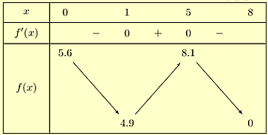

ĐỀ THI TOÁN 12 - ĐỀ SỐ 2
Phần I: Trắc Nghiệm Nhiều Lựa Chọn
Câu 1:
Hàm số nào dưới đây đồng biến trên khoảng \((-\infty; +\infty)\)?
A. \( y = -x^3 - 2x + 1 \)
B. \( y = \frac{x-2}{x+1} \)
C. \( y = 3x^3 + 3x - 2 \)
D. \( y = 2x^3 - 5x + 1 \)
Xem lời giải
Cách giải: Với \( y = 3x^3 + 3x - 2 \), ta có \( y' = 9x^2 + 3 > 0, \forall x \in \mathbb{R} \), nên hàm số đồng biến trên \( \mathbb{R} \).
Đáp án: C.
Câu 2:
Cho hàm số \( y = f(x) \) có đạo hàm \( f'(x) = (x^2 - 4)(x + 2)(x - 3) \) và liên tục trên \( \mathbb{R} \). Số điểm cực trị của hàm số đã cho là:
Xem lời giải
Phương pháp: Tìm số nghiệm bội lẻ của phương trình \( f'(x) = 0 \).
Cách giải:
Ta có: \( f'(x) = 0 \Leftrightarrow (x^2 - 4)(x + 2)(x - 3) = 0 \).
\( \Leftrightarrow (x + 2)^2 (x - 2)(x - 3) = 0 \Leftrightarrow \begin{cases} x = -2 \\ x = 2 \\ x = 3 \end{cases} \), với \( x = -2 \) là nghiệm kép.
Vậy hàm số đã cho có 2 cực trị (tại \( x = 2 \) và \( x = 3 \)).
Đáp án: B.
Câu 3:
Cho hàm số \( y = f(x) \) có bảng biến thiên như hình: 
Giá trị lớn nhất của hàm số đã cho trên đoạn \([-2; 4]\) bằng:
Xem lời giải
Phương pháp: Dựa vào bảng biến thiên.
Cách giải:
Từ bảng biến thiên, ta thấy giá trị lớn nhất của hàm số trên đoạn \([-2; 4]\) là 10.
Đáp án: B.
Câu 4:
Cho hàm số đa thức bậc bốn \( y = f(x) \) có đồ thị như hình: 
Phương trình \( f(x) - 1 = 0 \) có bao nhiêu nghiệm thực phân biệt?
Xem lời giải
Phương pháp: Dựa vào đồ thị hàm số.
Cách giải:
Ta thấy đường thẳng \( y = 1 \) cắt đồ thị hàm số tại 3 điểm phân biệt.
Do đó, phương trình \( f(x) - 1 = 0 \) có 3 nghiệm phân biệt.
Đáp án: A.
Câu 5:
Đồ thị hàm số nào sau đây có hình dạng như hình: 
A. \( y = x^5 + 3x \)
B. \( y = x^5 - 3x \)
C. \( y = x^3 - 3x^2 \)
D. \( y = x^3 + 3x^2 \)
Xem lời giải
Phương pháp: Dựa vào điểm mà đồ thị hàm số đi qua.
Cách giải:
Ta thấy đồ thị hàm số đi qua điểm \( (2; -4) \), nên kiểm tra từng lựa chọn:
Thử \( y = x^3 - 3x^2 \): tại \( x = 2 \), \( y = 2^3 - 3 \cdot 2^2 = 8 - 12 = -4 \), thỏa mãn.
Đáp án: C.
Câu 6:
Tập nghiệm của bất phương trình \( \left(\frac{1}{2}\right)^x < \frac{1}{8} \) là:
A. \( (3, +\infty) \)
B. \( (-\infty; 3) \)
C. \( [3; +\infty) \)
D. \( (-\infty; 3] \)
Xem lời giải
Phương pháp: Giải bất phương trình mũ.
Cách giải:
Ta có: \( \left(\frac{1}{2}\right)^x < \frac{1}{8} \Leftrightarrow \left(\frac{1}{2}\right)^x < \left(\frac{1}{2}\right)^3 \).
Vì \( \frac{1}{2} < 1 \), nên bất phương trình mũ đổi chiều: \( x > 3 \).
Đáp án: A.
Câu 7:
Trong không gian \( Oxyz \), cho \( \vec{a} = 2\vec{i} - 3\vec{j} + \vec{k} \). Tọa độ của \( \vec{a} \) là:
A. \( (-2; 1; 3) \)
B. \( (2; -3; 1) \)
C. \( (2; 1; 3) \)
D. \( (2; 1; -3) \)
Xem lời giải
Phương pháp: Cho vector \( \vec{x} = m\vec{i} + n\vec{j} + p\vec{k} \), thì \( \vec{x} = (m; n; p) \).
Cách giải:
Ta có: \( \vec{a} = 2\vec{i} - 3\vec{j} + \vec{k} \).
Tọa độ của vector \( \vec{a} \) là \( (2; -3; 1) \).
Đáp án: B.
Câu 8:
Trong không gian \( Oxyz \), cho tam giác \( ABC \) với \( A(1; 3; 4) \), \( B(2; -1; 0) \), \( C(3; 1; 2) \). Tọa độ trọng tâm \( G \) của tam giác \( ABC \) là:
A. \( G\left(3; \frac{2}{3}; 3\right) \)
B. \( G(2; -1; 2) \)
C. \( G(2; 1; 2) \)
D. \( G(6; 3; 6) \)
Xem lời giải
Phương pháp:
Tọa độ trọng tâm \( G \) của tam giác \( ABC \) được tính bởi:
\[
\begin{cases}
x_G = \frac{x_A + x_B + x_C}{3} \\
y_G = \frac{y_A + y_B + y_C}{3} \\
z_G = \frac{z_A + z_B + z_C}{3}
\end{cases}
\]
Cách giải:
\( x_G = \frac{1 + 2 + 3}{3} = 2 \), \( y_G = \frac{3 + (-1) + 1}{3} = 1 \), \( z_G = \frac{4 + 0 + 2}{3} = 2 \).
Tọa độ trọng tâm \( G \) là \( (2; 1; 2) \).
Đáp án: C.
Câu 9:
Trong không gian \( Oxyz \), cho \( \vec{a} = (1; -2; 2) \), \( \vec{b} = (-1; 2; 1) \). Giá trị của tích vô hướng \( \vec{a} \cdot \vec{b} \) bằng:
Xem lời giải
Phương pháp: Cho hai vector \( \vec{m} = (x_M; y_M; z_M) \), \( \vec{n} = (x_N; y_N; z_N) \), thì \( \vec{m} \cdot \vec{n} = x_M x_N + y_M y_N + z_M z_N \).
Cách giải:
Ta có: \( \vec{a} \cdot \vec{b} = 1 \cdot (-1) + (-2) \cdot 2 + 2 \cdot 1 = -1 - 4 + 2 = -3 \).
Đáp án: B.
Câu 10:
Cho hình chóp \( S.ABCD \) có \( ABCD \) là hình vuông cạnh \( a \), tam giác \( SAD \) đều. Góc giữa hai đường thẳng \( BC \) và \( SA \) bằng:
A. \( 60^\circ \)
B. \( 30^\circ \)
C. \( 90^\circ \)
D. \( 45^\circ \)
Xem lời giải
Phương pháp: Xác định góc giữa hai đường thẳng.
Cách giải:
Ta có: \( AB \parallel BC \Rightarrow (SA, BC) = (SA, AD) = \angle SAD = 60^\circ \).
Đáp án: A.
Câu 11:
Trong tuần lễ bảo vệ môi trường, các học sinh khối 12 tiến hành thu nhặt vỏ chai nhựa để tái chế. Nhà trường thống kê kết quả thu nhặt vỏ chai của học sinh khối 11 ở bảng sau: 
Hãy tìm trung vị của mẫu số liệu ghép nhóm trên:
A. 19,51
B. 19,59
C. 20,1
D. 18,3
Xem lời giải
Phương pháp:
Gọi \( n, n_m \) tương ứng là cỡ mẫu, tần số của nhóm chứa trung vị.
Giả sử \( [u_m; u_{m+1}) \) chứa trung vị.
Đặt \( C = n_1 + n_2 + \ldots + n_{m-1} \).
Công thức trung vị: \[
M_e = u_m + \frac{\frac{n}{2} - C}{n_m} (u_{m+1} - u_m)
\]
Cách giải:
Ta có: \( 53 + 82 + 48 + 39 + 18 = 240 \).
Như vậy, nhóm \( [15,5; 20,5] \) chứa trung vị.
Khi đó \( C = n_1 = 53 \), \( n_m = 82 \), \( \frac{n}{2} = 120 \).
Trung vị: \[
M_e = 15,5 + \frac{\frac{240}{2} - 53}{82} \cdot (20,5 - 15,5) \approx 19,59
\]
Đáp án: B.
Câu 12:
Cho hàm số \( y = \frac{ax^2 + bx + c}{x} (ac \neq 0) \) có đồ thị như hình: 
Đường tiệm cận xiên của đồ thị hàm số đã cho là đường thẳng:
A. Đường thẳng \( y = x \)
B. Đường thẳng \( y = -x \)
C. Đường thẳng \( x = 0 \)
D. Đường thẳng \( y = 2x \)
Xem lời giải
Phương pháp:
Gọi \( y = ax + b \) là tiệm cận xiên của đồ thị hàm số.
Khi đó: \( a = \lim_{x \to +\infty} \frac{f(x)}{x} \), \( b = \lim_{x \to +\infty} [f(x) - ax] \).
Cách giải:
Đồ thị hàm số đi qua các điểm \( (2; -4) \), \( (-2; 4) \):
\[
\begin{cases}
\frac{4a + 2b + c}{2} = -4 \\
\frac{4a - 2b + c}{-2} = 4
\end{cases}
\Rightarrow
\begin{cases}
4a + 2b + c = -8 \\
4a - 2b + c = -8
\end{cases}
\]
Ta có: \( y = \frac{ax^2 + bx + c}{x} = ax + b + \frac{c}{x} \Rightarrow y' = a - \frac{c}{x^2} \).
\( x = 2 \) là cực trị của hàm số nên \( y'(2) = 0 \Leftrightarrow a - \frac{c}{4} = 0 \Leftrightarrow 4a - c = 0 \).
Giải hệ, ta được: \( a = -1 \), \( b = 0 \), \( c = -4 \).
Vậy hàm số: \( y = \frac{-x^2 - 4}{x} \).
Tiệm cận xiên: \( m = \lim_{x \to +\infty} \frac{y}{x} = \lim_{x \to +\infty} \frac{-x^2 - 4}{x^2} = -1 \).
Vậy tiệm cận xiên là \( y = -x \).
Đáp án: B.
Phần II: Trắc Nghiệm Đúng/Sai
Câu 1:
Nồng độ thuốc trong máu của bệnh nhân sau khi tiêm thuốc \( t \) giờ được cho bởi công thức \( c(t) = \frac{t}{t^2 + 1} \, (mg/l) \). Đánh giá các phát biểu sau:
a) Sau khi tiêm thuốc 2 giờ thì nồng độ thuốc trong máu của bệnh nhân bằng \( 0,4 \, (mg/l) \).
b) Sau khi tiêm thuốc thì nồng độ thuốc trong máu của bệnh nhân có thể vượt quá \( 0,5 \, (mg/l) \).
c) Sau khi tiêm thuốc 1 giờ thì nồng độ thuốc trong máu của bệnh nhân cao nhất.
d) Sau khi tiêm thuốc thì nồng độ thuốc trong máu của bệnh nhân cao nhất bằng \( 0,5 \, (mg/l) \).
Xem lời giải
Cách giải:
a) Đúng: \( c(2) = \frac{2}{2^2 + 1} = 0,4 \, (mg/l) \).
\( c'(t) = \frac{1 - t^2}{(t^2 + 1)^2} \), \( c'(t) = 0 \Rightarrow t = 1 \) (cực đại).
b) Sai: Nồng độ tối đa \( 0,5 \, (mg/l) \), không vượt quá.
c) Đúng: Nồng độ cao nhất tại \( t = 1 \).
d) Đúng: Nồng độ cao nhất là \( 0,5 \, (mg/l) \).
Câu 2:
Một hồ nước nhân tạo được xây dựng trong một công viên giải trí. Trong mô hình minh họa, nó được giới hạn bởi các trục tọa độ và đồ thị hàm số \( y = f(x) = -0,1x^3 + 0,9x^2 - 1,5x + 5,6 \). Đơn vị đo độ dài trên mỗi trục tọa độ là \( 100 \, \text{m} \): 
a) Đường dạo ven hồ chạy dọc theo trục \( Ox \) dài \( 600 \, \text{m} \).
b) Trên đường dạo ven hồ chạy dọc theo trục \( Ox \), điểm cách gốc \( O \) một đoạn \( 500 \, \text{m} \) có khoảng cách theo phương thẳng đứng đến bờ hồ đối diện là lớn nhất.
c) Khoảng cách nhỏ nhất theo phương thẳng đứng từ một điểm trên đường dạo ven hồ đến bờ hồ đối diện là \( 490 \, \text{m} \).
d) Trong công viên có một con đường chạy dọc theo đồ thị hàm số \( y = -1,5x + 18 \). Người ta dự định xây dựng bên bờ hồ một bến thuyền đạp nước sao cho khoảng cách từ bến thuyền đến con đường này là ngắn nhất. Biết tọa độ của điểm để xây bến thuyền là \( M(a; b) \). Giá trị của \( a + 5b \) bằng 43.
Xem lời giải
Phương pháp:
a) Giải phương trình hoành độ giao điểm \( f(x) = 0 \).
b), c) Khảo sát hàm số \( y = f(x) \).
d) Viết phương trình tiếp tuyến của đồ thị hàm số \( y = f(x) \) song song với \( y = -1,5x + 18 \).
Cách giải:
a) Sai: \( -0,1x^3 + 0,9x^2 - 1,5x + 5,6 = 0 \Rightarrow x = 8 \). Giao điểm với trục \( Ox \): \( A(8; 0) \). Đường dạo dài \( 8 \cdot 100 = 800 \, \text{m} \).
b) Đúng: \( y = -0,1x^3 + 0,9x^2 - 1,5x + 5,6 \), \( y' = -0,3x^2 + 1,8x - 1,5 \), \( y' = 0 \Rightarrow x = 1, x = 5 \). Tại \( x = 5 \) (tương ứng \( 500 \, \text{m} \)), giá trị \( y \) lớn nhất.
Bảng biến thiên: 
c) Đúng: Khoảng cách nhỏ nhất là \( 490 \, \text{m} \).
d) Đúng: Tiếp tuyến tại \( x_0 = 6 \), \( f(6) = 7,4 \). Tọa độ \( M(6; 7,4) \), \( a + 5b = 6 + 5 \cdot 7,4 = 43 \).
Câu 3:
Trong không gian với hệ tọa độ \( Oxyz \), cho tam giác \( ABC \) với \( A(1; 0; -2) \), \( B(-2; 3; 4) \), \( C(4; -6; 1) \):
a) \( \overrightarrow{AB} = (3; -3; 6) \).
b) Hình chiếu vuông góc của \( B \) lên trục \( Ox \) là \( B'(-2; 3; 0) \).
c) Tồn tại 1 điểm \( M \) thuộc trục hoành sao cho tam giác \( MBC \) vuông tại \( M \).
d) Nếu \( ABDC \) là hình bình hành thì tọa độ điểm \( D \) là \( (1; -3; 7) \).
Xem lời giải
Phương pháp:
a) Tìm tọa độ \( \overrightarrow{AB} \).
b) Hình chiếu vuông góc của \( B(x, y, z) \) lên trục \( Ox \) là \( B'(x; 0; 0) \).
c) Tam giác \( MBC \) vuông tại \( M \): \( \overrightarrow{MB} \cdot \overrightarrow{MC} = 0 \).
d) \( ABDC \) là hình bình hành: \( \overrightarrow{AB} = \overrightarrow{CD} \).
Cách giải:
a) Sai: \( \overrightarrow{AB} = (-2 - 1; 3 - 0; 4 - (-2)) = (-3; 3; 6) \).
b) Sai: Hình chiếu của \( B(-2; 3; 4) \) lên trục \( Ox \): \( B'(-2; 0; 0) \).
c) Sai: \( M(m; 0; 0) \), \( \overrightarrow{MB} = (-2-m; 3; 4) \), \( \overrightarrow{MC} = (4-m; -6; 1) \), \( \overrightarrow{MB} \cdot \overrightarrow{MC} = 0 \Rightarrow m = 1 \pm \sqrt{23} \). Có 2 điểm \( M \), không phải 1.
d) Đúng: \( \overrightarrow{AB} = (-3; 3; 6) \), \( \overrightarrow{CD} = (a-4; b+6; c-1) \). \( \overrightarrow{AB} = \overrightarrow{CD} \Rightarrow D(1; -3; 7) \).
Câu 4:
Cho lăng trụ đứng \( ABC.A'B'C' \) có \( AC = a \), \( BC = 2a \), \( \angle ACB = 120^\circ \), thể tích \( V \). Gọi \( M \) là trung điểm của \( BB' \): 
a) Góc phẳng nhị diện \( [A, CC', B] = 60^\circ \).
b) Biết khoảng cách giữa hai mặt đáy lăng trụ bằng \( 2a \). Khi đó \( V = a^3 \sqrt{3} \).
c) \( V_{M.ABC} = \frac{1}{6} V \).
d) \( d(C', (ABB'A')) = \frac{a \sqrt{21}}{7} \).
Xem lời giải
Cách giải:
a) Sai: \( \angle ACB = 120^\circ \), nên \( [A, CC', B] = 120^\circ \).
b) Đúng: Diện tích đáy \( S_{ABC} = \frac{1}{2} \cdot a \cdot 2a \cdot \sin 120^\circ = \frac{a^2 \sqrt{3}}{2} \). Thể tích: \( V = S_{ABC} \cdot AA' = \frac{a^2 \sqrt{3}}{2} \cdot 2a = a^3 \sqrt{3} \).
c) Đúng: \( V_{M.ABC} = \(AV\3 \cdot \frac{1}{2} \cdot BB' \cdot S_{ABC} = \frac{1}{6} V \).
d) Đúng: \( AB = a \sqrt{7} \), \( C'H = \frac{a \sqrt{21}}{7} \), khoảng cách \( d(C', (ABB'A')) = \frac{a \sqrt{21}}{7} \).
Phần III: Trắc Nghiệm Trả Lời Ngắn
Câu 1:
Cho đồ thị hàm số \( f(x) = 2 \sin x \) như hình: 
Tính diện tích tam giác \( ABC \).
Xem lời giải
Cách giải:
\( f(x) = 2 \Rightarrow x = \frac{\pi}{2} + k \cdot 2\pi \): \( B\left(\frac{\pi}{2}; 2\right) \), \( C\left(\frac{5\pi}{2}; 2\right) \).
\( A(0; -2) \), \( d(A, BC) = 4 \), \( BC = 2\pi \).
\( S_{ABC} = \frac{1}{2} \cdot 4 \cdot 2\pi = 4\pi \approx 12,6 \).
Câu 2:
Một hồ bơi có dạng như hình: 

Chỉ cần bơm trong thời gian bao lâu (đơn vị tính bằng phút)?
Xem lời giải
Cách giải:
\( S_{ABC} = 2 \, \text{m}^2 \), \( V_1 = 12 \, \text{m}^3 \); \( S_{ADEF} = 24 \, \text{m}^2 \), \( V = 144 \, \text{m}^3 \).
Thể tích cần bơm: \( 0,75 \cdot 144 - 12 = 96 \, \text{m}^3 \).
Thời gian: \( 96 \div 0,25 = 384 \, \text{phút} \).
Câu 3:
Giả sử tỉ lệ sinh của tỉnh A tuân theo quy luật logistic được mô hình hóa bằng hàm số \( f(t) = \frac{200}{1 + 4e^{-t}} \), \( t \geq 0 \), \( t \in \mathbb{N} \). Hỏi sau bao nhiêu tháng tốc độ tăng trưởng của dân số tỉnh A là lớn nhất?
Xem lời giải
Cách giải:
\( f'(t) = \frac{800 e^{-t}}{(1 + 4e^{-t})^2} \), \( f''(t) = 0 \Rightarrow t = \ln 4 \approx 1,39 \). Làm tròn: 2 tháng.
Câu 4:
Một máy bay trình diễn có đường bay gần với hệ trục \( Oxy \). Đường bay có dạng là một phần của đồ thị hàm số \( y = f(x) \), có đường tiệm cận đứng \( x = 2 \). Vị trí máy bay tiếp đất cách điểm giới hạn bao nhiêu? 
Xem lời giải
Cách giải: Hàm số \( y = \frac{-x^2 + 12,5x - 25}{x - 2} \). Tiệm cận xiên \( y = -x + 10,5 \), giao điểm \( G(10,5; 0) \). Máy bay tiếp đất tại \( C(10; 0) \), khoảng cách \( CG = 0,5 \).
Câu 5:
Có ba lực tác động vào một cái bàn như hình: 
Độ lớn hợp lực của ba lực là \( a \, (N) \), tìm \( a \).
Xem lời giải
Cách giải:
\( |\vec{F}_1 + \vec{F}_2 + \vec{F}_3| = \sqrt{9^2 + 4^2 + 7^2 + 2 \cdot 9 \cdot 4 \cdot \cos 110^\circ} \approx 11 \, \text{N} \).